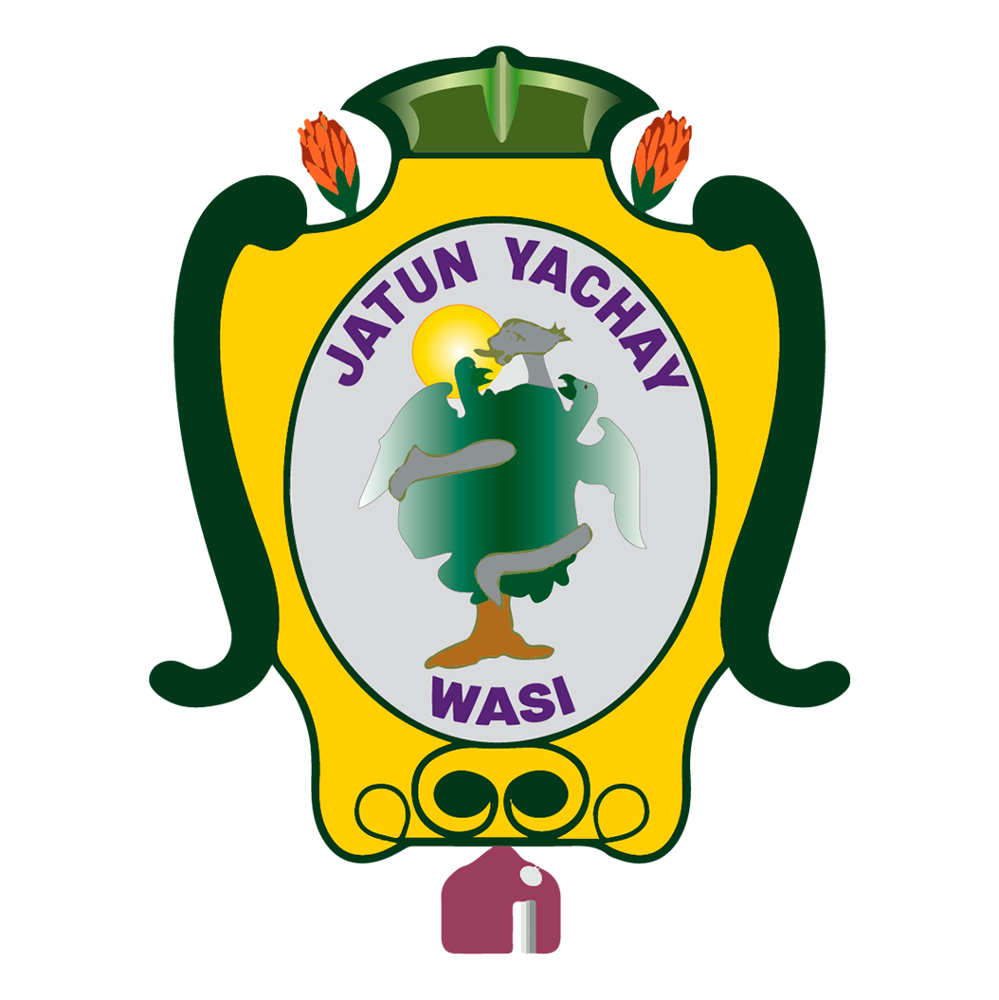
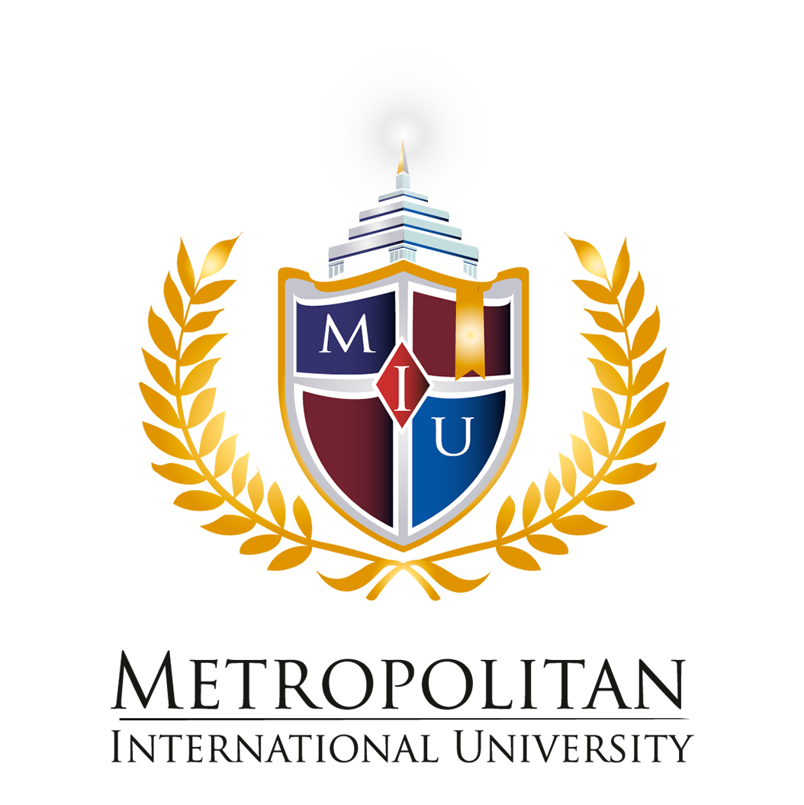
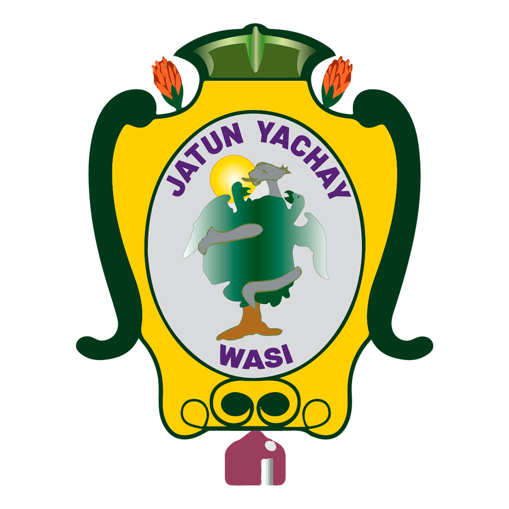
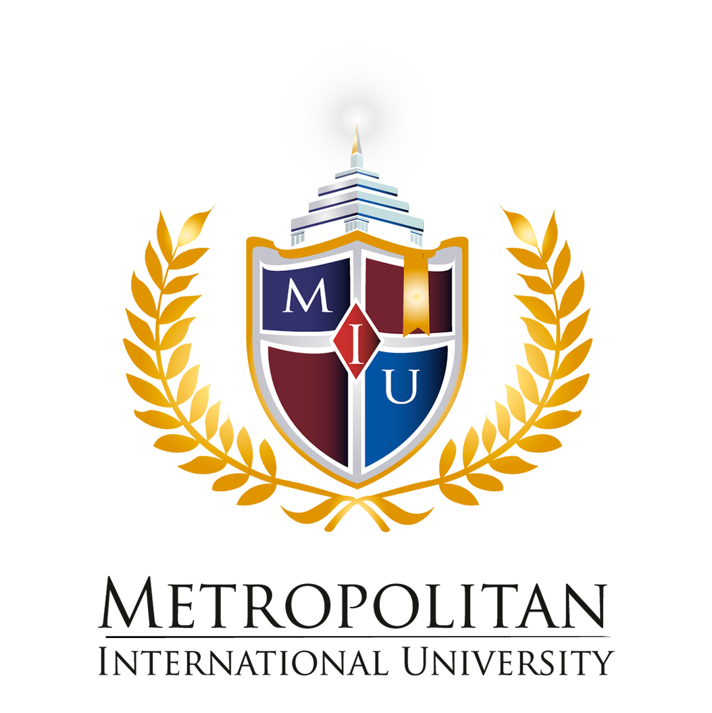

El colegio de bachillerato particular PCIE John Dewey, acompañará el proyecto de vida de nuestros estudiantes con miras a una formación integral para que puedan convivir, transformar y vivir su entorno, su realidad y desempeñarse efectivamente, dentro del sociedad. El Colegio de Bachillerato PCEI John Dewey se encuentra legalizado en debida forma ante el Ministerio de Educación con resolución Nro. MINEDUC-CZ3-2022-00249-R de fecha 08 de septiembre de 2022. Código AMIE 06H01927. Institución de Sostenimiento Particular, modalidad Distancia Virtual.


 


